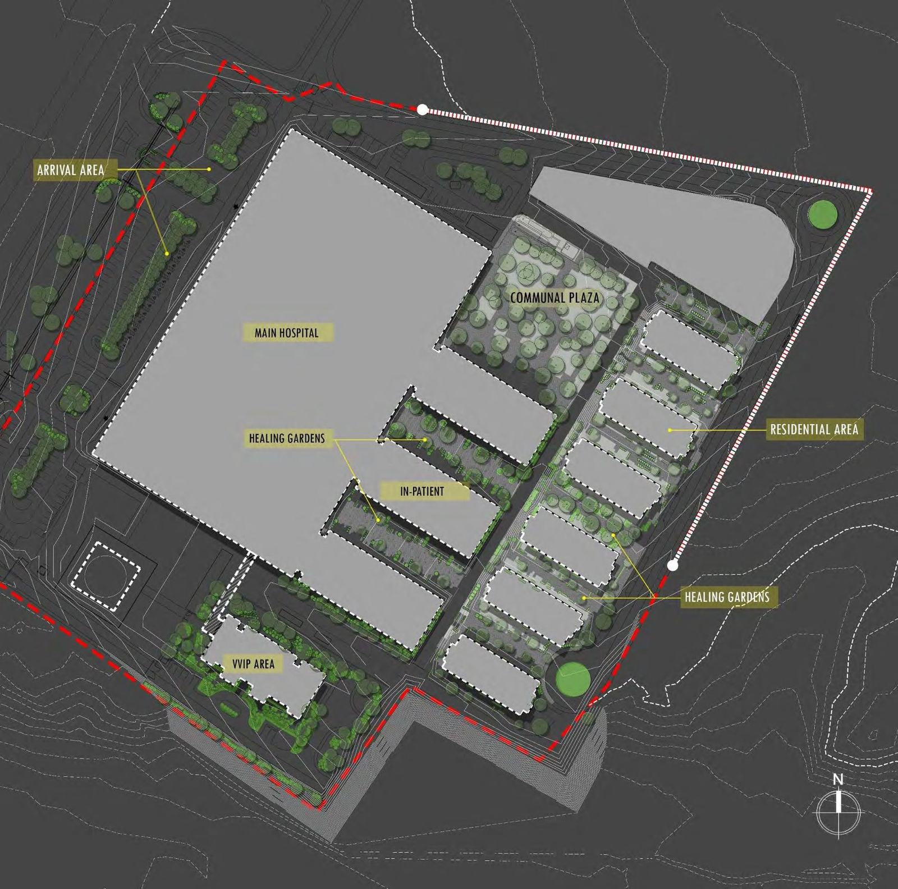

NEOM Hospital Landscape Conceptual Masterplan
Landscape design · Tabuk (NEOM), Saudi Arabia
Landscape conceptual master plan for the NEOM hospital in Tabuk, Saudi Arabia, designed as a biophilic "healing landscape" using sustainable materials, efficient water management and arid-climate planting. Prepared for NEOM with Saudi Diyar Consultants.
Partners
Client
NEOM
More from Saudi Arabia
 Jabal Thabeer Park (Mina, Makkah)Mina, Makkah · 2025
Jabal Thabeer Park (Mina, Makkah)Mina, Makkah · 2025 Muzdalifah ParkMuzdalifah, Makkah · 2026
Muzdalifah ParkMuzdalifah, Makkah · 2026 Palm Beach Resort Landscape DesignRiyadh · 2006
Palm Beach Resort Landscape DesignRiyadh · 2006 Kidana Al Khaif (Mina, Muzdalifah and Arafat)Makkah (Mina, Muzdalifah, Arafat) · 2024-2026
Kidana Al Khaif (Mina, Muzdalifah and Arafat)Makkah (Mina, Muzdalifah, Arafat) · 2024-2026 AlUla Strategic Framework PlanAlUla · 2022
AlUla Strategic Framework PlanAlUla · 2022 Jorhum DestinationMakkah · 2026
Jorhum DestinationMakkah · 2026